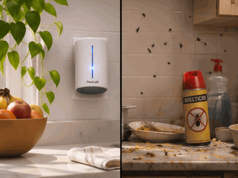
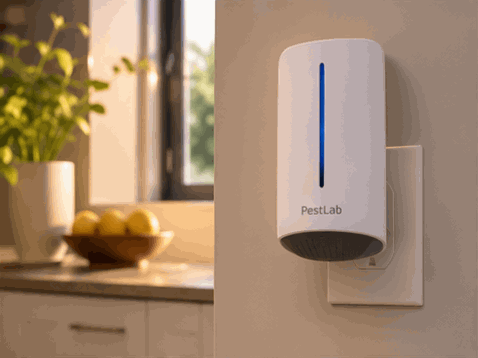
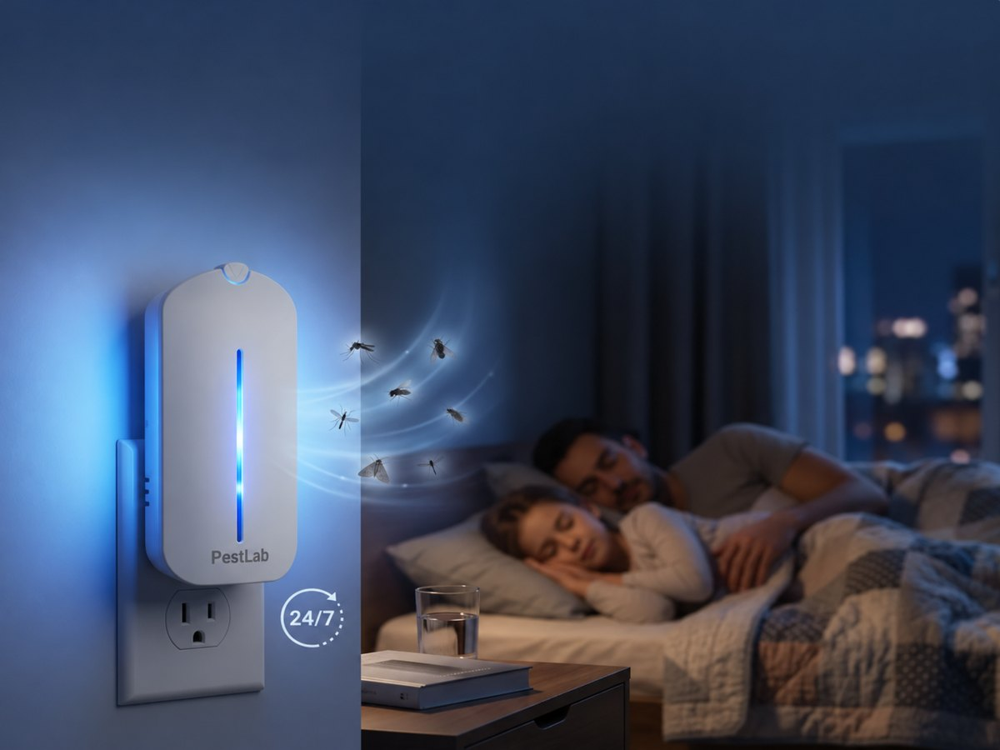
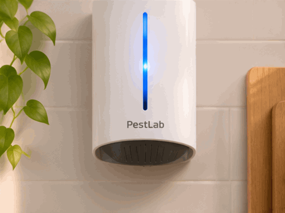
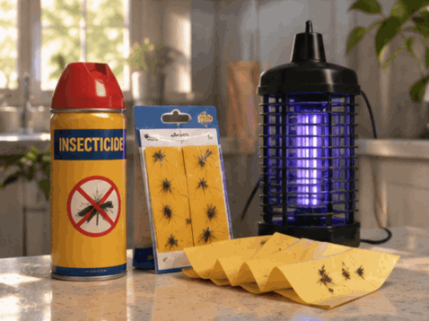
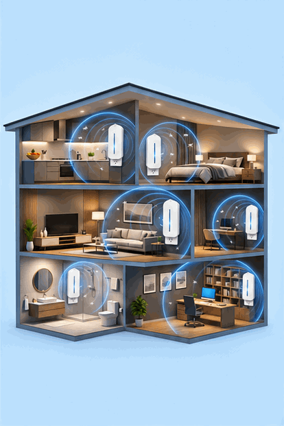

Exterminators Can't Believe This $30 Plug-In Trap. Here's 7 Reasons Why.
If you've ever stood in your kitchen swatting at flies that just won't go away, you already know how frustrating it is. Now, a simple plug-in trap trusted by over 114,000 customers is changing how American homeowners deal with flying insects.
1. Enjoy Your Kitchen Without Constantly Swatting Flies
You know those tiny flies that hover around your fruit bowl, even after you've cleaned everything? A plug-in trap can catch insects while you're busy doing other things.
Now imagine sitting down with your morning coffee without having to keep waving them away.
2. Keep Bug Sprays Away From Your Food
Nobody enjoys spraying insecticides in the same room where they prepare dinner. The smell can linger long after the flies are gone.
You can finally make dinner without worrying about bug spray drifting onto your food or that harsh chemical smell lingering in the kitchen for hours afterward.

3. Catches Flies Even When You're Not Home
Flies don't wait until you're around to deal with them. They just turn up while you're working, cooking, or sleeping.
That's the appeal of something that runs continuously in the background, catching insects without needing someone to operate it.

4. Quiet Enough to Forget It's There
That sudden snapping sound from an electric zapper gets old pretty quickly, especially when you're trying to relax.
A silent plug-in trap is much easier to live with. You can read, watch television, or enjoy dinner without the constant interruptions.

5. Throw Away the Mess in Seconds
Peeling old fly paper off the ceiling is unpleasant enough. Having to scrape dead insects out of a zapper isn't much better.
A removable sticky cartridge keeps the mess contained, so replacing it is as simple as sliding it out and throwing it away.

6. Stop Spending So Much on Temporary Fixes
Another can of bug spray or pack of fly strips? It never seems like much money until you add everything up.
A reusable plug-in device with replaceable cartridges is worth considering if you're tired of buying the same supplies again and again.

7. Use It Wherever Flying Insects Keep Showing Up
The kitchen isn't the only place flies and gnats turn up. They can hover around bathroom sinks, houseplants, and laundry rooms, too.
A small plug-in device can be moved between suitable outlets, making it useful in different areas of the home.


I was skeptical too. After everything else I'd tried, I didn't think a little plug-in trap was going to be any different. But with free shipping and a 90-day money-back guarantee, there is nothing to lose.
Flying Insect Trap
Real Customer Testimonials
These reviews were left by customers on pestlab.co.
Finally gave me my kitchen back
I was constantly seeing fruit flies around my kitchen no matter how much I cleaned. Within the first few days, the PestLab Flying Insect Trap had already caught dozens of them. After a week, the problem was practically gone. It's quiet, easy to use, and finally gave me my kitchen back
So clean
The best part is how clean it is. No dead bugs on the floor, no zapping sound, and no spray residue. I'll be buying another one.
Helped cut them down
We leave the patio door open a lot during nice weather, and flies always found their way inside. Putting one near the entry has really helped cut them down.
DISCLAIMER: Individual results may vary by insect type, placement and environment. Product features and claims are provided by the brand. This page is an advertisement published by PestLab.